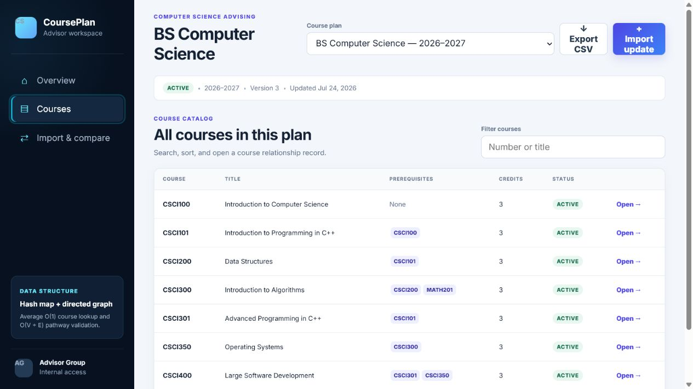
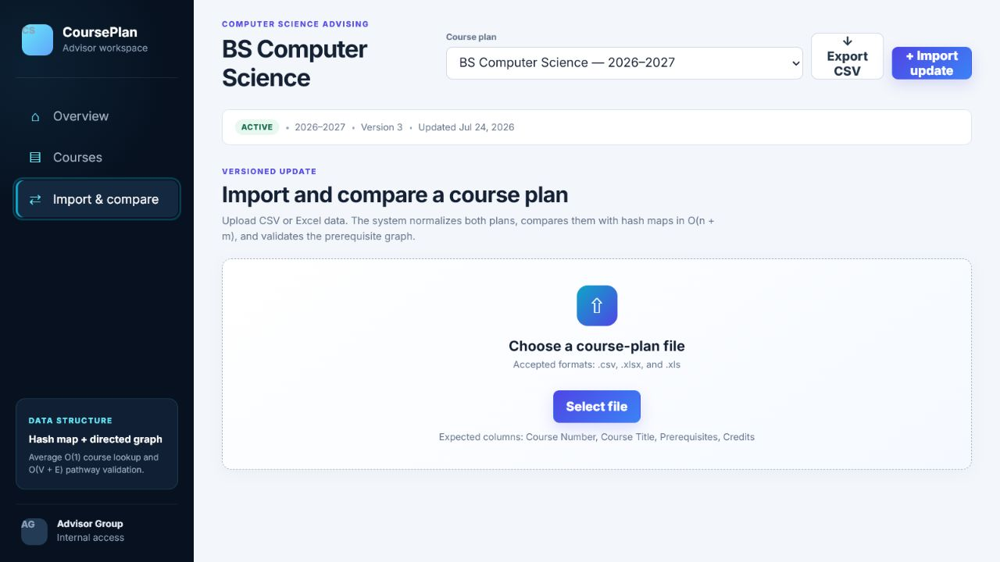
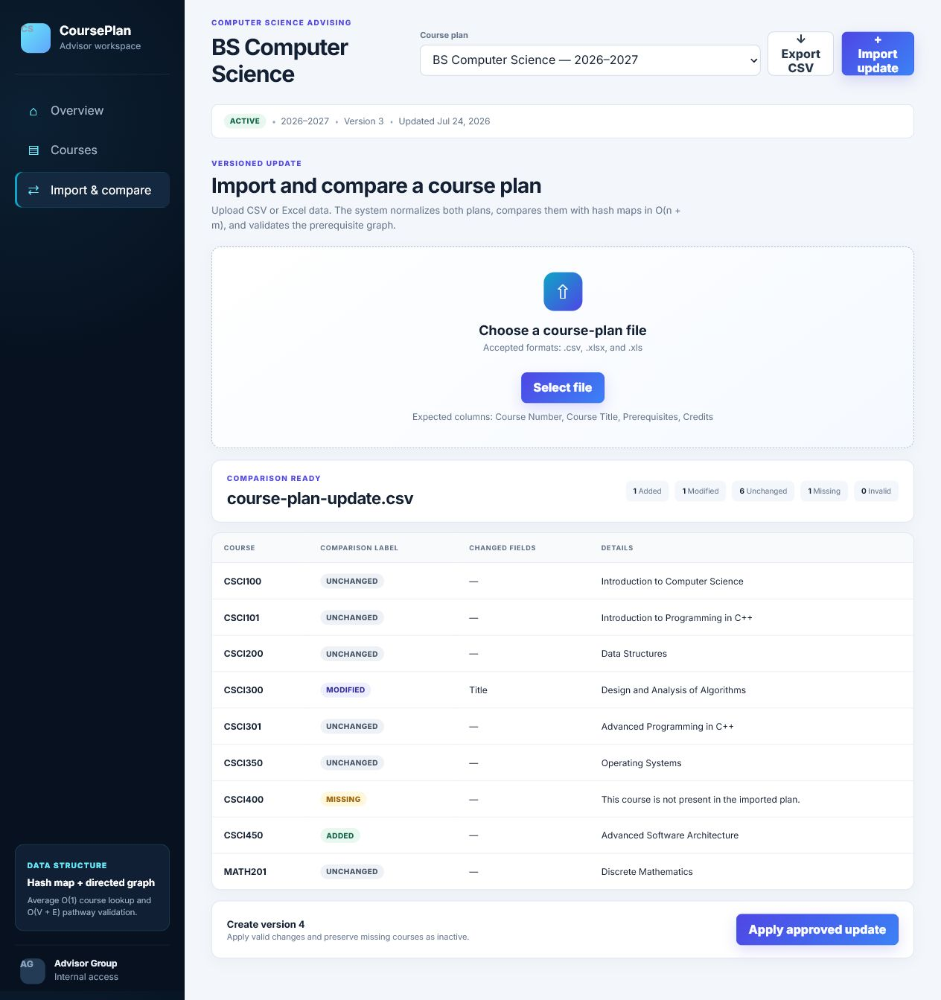

Artifact description
From a binary search tree to an advising workflow
The original CS 300 artifact was a C++ command-line application that loaded course data from CSV into a binary search tree. It could print an alphanumeric list or find one course and its prerequisites. I transformed it into an Angular application where advisors can select named plans, search courses, view prerequisites and subsequent courses, explore a visual pathway, filter the catalog, export data, and preview CSV or Excel updates.
The enhancement demonstrates my progression from analyzing data structures academically to selecting and applying them according to real user access patterns.
Technical decisions
One structure does not fit every operation
Hash-based course index
A Map<string, Course> provides average O(1) retrieval by normalized course number, avoiding an unbalanced tree’s O(n) worst case.
Bidirectional graph
Forward adjacency lists retrieve prerequisites in O(p); reverse lists retrieve dependent courses in O(d) without scanning the full plan.
Graph validation
Depth-first search detects circular prerequisite relationships in O(V + E), preventing plans in which a course indirectly requires itself.
Linear comparison
Current and incoming hash maps are compared in O(n + m), labeling courses added, modified, unchanged, missing, or invalid before changes are applied.
Sets remove duplicate prerequisites, identifiers and headers are normalized, missing references are validated, and absent imported courses are preserved as inactive instead of being silently deleted.
Functional evidence
Algorithms translated into visible features



Course outcome coverage
Evaluating trade-offs and delivering practical value
The enhancement meets the outcome focused on designing and evaluating computing solutions with algorithmic principles. I evaluated the strengths and limitations of the original binary search tree, identified the advisor’s key operations, and selected hash maps, sets, and adjacency lists to support them. I documented the complexity of loading, searching, comparing, sorting, and traversing course data.
It also supports the outcome related to well-founded and innovative computing practices. The search interface, comparison labels, visual pathway, and import preview turn abstract data-structure concepts into a usable advising workflow.
Reflection
Efficient design begins with the access pattern
The central lesson was that no single data structure was best for every operation. Hash maps support individual lookup, arrays support sorted presentation, sets prevent duplicate relationships, and adjacency lists support graph navigation.
Maintaining both forward and reverse indexes trades additional memory for faster retrieval. Defining a “next course” also required care: a direct dependent course is not necessarily a course for which a specific student is eligible. Because the prototype stores no student records, it correctly describes curriculum relationships without making eligibility claims.
Spreadsheet imports reinforced the importance of normalization and validation. The application accepts common header aliases and separators, validates prerequisite references, previews changes, and treats missing records conservatively. Separating persistent plan data from runtime indexes also creates a clean path toward replacing browser storage with an authenticated database API.
Original + enhanced